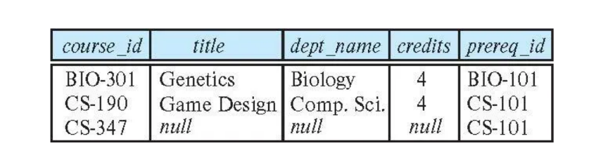
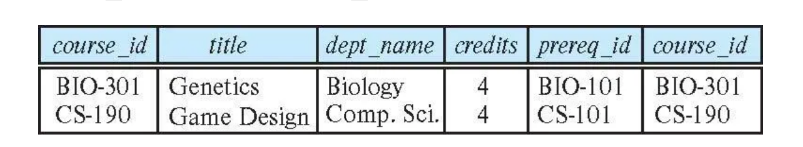

Chapter4 Intermediate SQL
4.1 Join Expressions
inner join 内连接:
inner join相当于笛卡尔积，与使用逗号连接两张表的效果相同，使用时可直接写成join。
on关键字类似于where，用于约束，常与join联用。例如：
# 写法一：
select *
from student join takes on student_ID=takes_ID
# 写法二：
select *
from student,takes
where student_ID=takes_ID
natural join 自然连接:
如果两张表有相同名字的属性，各自有元组对应该属性的值相同（所有共同属性的对应值都相同），则natural join会将这两个元组连接形成一个新的元组，并且相同的属性只保留一个（列）。
例如，查询学生与其对应上过的课的编号：
# 写法一：
select name,course_id
from students,takes
where student.ID=takes.ID
# 写法二：
select name,course_id
from student natural join takes

值得注意的是，natural join会自行寻找相同的属性合并，但相同的属性在两张表里的含义可能不同。例如，查询学生与其对应上过的课的名称：
# 正确写法：
select name,title
from student natural join takes,course
where takes.course_id=course.course_id
# 错误写法：
select name,title
from student natural join takes natural join course
错误原因在于：student的dept_name属性与course的dept_name属性含义不同，但被连接。
为了避免这类情况，使用using关键字可以指定合并的属性名。因此，上例的错误写法可改为：
outer join 外连接:
outer join是连接操作的扩展，避免了信息丢失，其有三种类型：
left outer join：保留前一张表格的信息，剩余用null填充，符号为$r_1⟕r_2$right outer join：保留后一张表格的信息，剩余用null填充，符号为$r_1⟖r_2$full outer join：保留两张表格的信息，剩余用null填充，符号为$r_1⟗r_2$
outer join有四种用法：
- 什么都不加：退化为笛卡尔积或报错
- 与
on联用：进行相应的null填充，但不合并相同列 - 与
using联用：进行相应的null填充，且合并相同列 - 与
natural联用：进行相应的null填充，且合并相同列
假设有以下两张表：
其中，BIO-301和CS-190在两张表中都有出现，CS-315只在course表中出现，CS-347只在prereq表中出现。
natural left outer join：
course表的内容全部保留，因此即使CS-315只在course表中出现，也会保留并用null填充其他属性。

natural right outer join：
prereq表的内容全部保留，因此即使CS-347只在prereq表中出现，也会保留并用null填充其他属性。

natural full outer join：
两张表的内容全部保留，因此即使CS-315和CS-347只在一张表中出现，也会保留并用null填充其他属性。
Example
还是以这两张表为例：



4.2 Views
View Definition and Use:
视图（view）是一种虚拟表，与数据库中原本就存在的真实表相对，其基于查询结果构建，本质上是一个重命名的查询表达式。语法如下：
视图的使用与真实表格类似，其也能进行查询，定义时可以依赖其他视图，也可以依赖自己（递归）。
如果视图$v_1$的定义中用到了视图$v_2$，则称$v_1$关于$v_2$是depend directly的。
如果视图$v_1$关于$v_2$是depend directly的，或者二者之间存在依赖链，则称$v_1$关于$v_2$是depend on的。
Example
建立instructor的视图，不包括工资属性：
在faculty视图上查询所有生物系的教授：
建立关于院系总工资的视图：
View Expansion:
由于视图的本质是查询表达式，因此当需要解析的视图中包含其他视图时，会迭代进行视图的展开，最终展开为不包含任何视图的查询表达式（递归除外）。
Materialized Views:
物化视图（materialized view）与普通的视图不同，其对应的数据会真实地存储在硬件上，而不是表达式的抽象。因此，其解析时不需要展开，而是直接使用结果。
-
物化视图的优点：
- 频繁查询时速度更快
-
物化视图的缺点：
- 维护代价：一旦原始数据更新，物化视图也要进行对应的更新
- 存储代价
Update of View:
问题一：属性缺失
假设faculty视图是instructor表忽略salary属性的视图，现在更新faculty视图，插入一条新的数据，但这条数据没有salary属性，那么instructor表应该如何更新？
当遇到属性缺失的情况，通常有两种做法：
- 拒绝操作
- 空值填充
问题二：更新不唯一
例如：
create view instructor_info as
select ID,name,building
from instructor,department
where instructor.dept_name=department.dept_name;
insert into instructor_info
values('69987','White','Taylor');
出现的问题是，如果有多个院系位于Taylor楼中，那么插入的数据应该属于哪个院系？如果没有院系在Taylor楼中，那么插入的数据又该何去何从？
因此，大部分SQL只支持简单视图的更新，这些视图可能需要满足：
from子句后面只有一张表格select子句后面的属性不含表达式、聚合函数、distinct关键字等- 没有列在
select子句后面的属性可以设为null - 查询表达式中没有
group by或having子句
4.3 Index
索引（index）是用来提高查询性能的数据结构。在查询范围很大，但目标数据很小的情况下，可以为表格的某个属性建立索引（单维索引），加速查询。语法如下：
例如，在学生表中为ID属性建立索引，能更快地查询到ID为12345的学生：
create table student
(
ID varchar(5),
name varchar(20) not null,
dept_name varchar(20),
tot_cred numeric(3,0) default 0,
primary key (ID)
);
create index studentID_index on student (ID);
select *
from student
where ID='12345';
4.4 Integrity Constraints
完整性约束涉及以下方面：
- not null
- primary key
- unique
- check(P), where P is a predicate
- ...
unique 唯一性：
unique关键字确保表中的某一列或某组列的数据具有唯一性，即对应的数据不能重复：
从数据库理论的角度来看，这些属性组成的集合构成了超键。
check 检查:
check关键字会检查每个元组是否满足之后的谓词，确保数据符合特定的规则，从而保持数据的一致性和完整性。例如，确保semester属性为Spring, Summer, Fall, Winter之一：
create table section
(
course_id varchar(8),
sec_id varchar(8),
semester varchar(6),
year numeric(4,0),
building varchar(15),
room_number varchar(7),
time_slot_id varchar(4),
primary key (course_id,sec_id,semester,year),
check (semester in ('Spring','Summer','Fall','Winter'))
);
Note
check不止在元组插入或更新的时候会进行检查，当谓词发生变化时也会对现有元组进行检查。
例如：
当time_slot表格发生变化时，谓词也发生变化，这时候所有的元组都会被再次检查。
Integrity Constraint Violation During Transactions:
对于以下例子：
create table person
(
ID char(10),
name varchar(40),
mother char(10),
father char(10),
primary key (ID),
foreign key (mother) references person(ID),
foreign key (father) references person(ID)
);
外键自己参照自己，为了不违反完整性约束，有以下几种方法：
- 在插入一个人的数据之前先插入其父母的数据，即考虑顺序
- 插入数据时父母属性默认为空，所有的数据插入完后再更新父母属性
- 延迟检查
Assertions:
断言（assertion）确保数据库中的数据满足特定的条件：
Triggers:
触发器（trigger）是一种自动执行的语句，遵循ECA原则（Event事件、Condition条件、Action动作）。
- 触发的事件可以是
insert，delete或update，如果是update，还可以指定具体的属性 - 触发的时间可以是
before或after - 触发的数据可以是
old row或new row
例如，将空白的grade改为null：
create trigger setnull_trigger before update of takes on (grade)
referencing new row as nrow
for each row
when (nrow.grade='')
begin atomic
set nrow.grade=null;
end;
Example
更新学生的总学分：
create trigger credits_earned after update of takes on (grade)
referencing new row as nrow
referencing old row as orow
for each row
when nrow.grade<>'F' and nrow.grade is not null and (orow.grade='F' or orow.grade is null)
begin atomic
update student
set tot_cred=tot_cred+(select credits
from course
where course.course_id=nrow.course_id)
where student.id=nrow.id;
end;
4.5 Data Types
Built-in Data Types:
date:date '2005-7-27'time:time 09:00:30timestamp:timestamp '2005-7-27 09:00:30.75'interval:interval '1' day
Large-Object Types:
图像、视频、CAD文件等大型数据对应特殊的数据类型：
blob: binary large objectclob: character large object
查询large object时使用的是pointer（指针、定位器）。
User-Defined Types:
使用create type关键字创建自定义数据类型。例如：
create type Dollars as numeric (12,2) final; # final表示这个类型是最终类型，不能被进一步继承或修改
create table department
(
dept_name varchar(20),
building varchar(15),
budget Dollars
);
Domains:
使用create domain关键字创建域（domain）。例如：
create domain person_name char(20) not null;
create domain degree_level varchar(10)
constraint degree_level_test # 设置约束
check (value in ('Bachelors','Masters','Doctorate'));
Note
类型和域类似，但域会有更多的约束条件，如非空等。
4.6 Authorization
SQL在以下几个方面可以设置权限：
- read
- insert
- update
- delete
- reference
- all：所有权限
每一种类型的授权称为一个权限（privilege）。
grant 授权:
grant关键字用于授权：
其中，<user list>可以是用户ID，public（所有用户）或特定的role。
例如：
授予视图的权限并不意味着授予视图底下表格的权限。
授权者自己要有对应的权限（或者是database administrator）。
revoke 撤回授权:
revoke关键字用于撤回授权：
例如：
如果<user list>是public，那么那些被明确授权的用户并不会受到影响。
对于相同权限，如果A和B都将该权限授予给C，那么A撤回权限后，C的权限可能仍然保留，需要考虑级联。
若A授予B权限，B授予C相同权限，那么当A撤回权限时，C的权限也会被撤回。
Roles:
role是对user的分组，语法如下：
设置user为指定的role：
授予指定的role权限：
role也可以继承（role2得到role1的所有权限）：
Transfer of Privileges:
允许user再次给其他人授权：
级联撤回，之前再次给出去的授权也撤回：
拒绝操作：